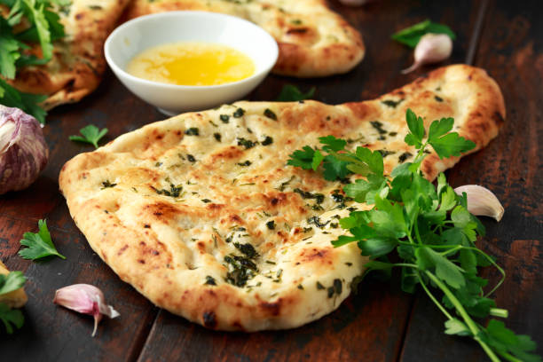

Naan

Description
This homemade naan recipe makes soft, chewy naan with a buttery taste.
It is the best I have tasted outside of an Indian restaurant.
Simply delicious eaten warm brushed with melted butter
or served with your favorite curry.
Ingredients
- Water - 1 cup
- Active Dry Yeast - 1 packet
- White Sugar - 1/4 cups
- Milk - 3 tablespoons
- Egg - 1
- Salt - 2 tablespoons
- Bread Flour - 4 1/2 cups
Steps
- Dissolve yeast in warm water in a large bowl. Let stand about 10 minutes, until frothy.
- Meanwhile, generously oil a large bowl.
- Stir sugar, milk, egg, and salt into the yeast mixture. Mix in enough flour to make a soft dough.
- Knead dough on a lightly floured surface until smooth, 6 to 8 minutes.
- Place dough in the prepared oil, cover with a damp cloth, and let rise until doubled in size, about 1 hour.
- Punch down dough on a lightly floured surface, and knead in garlic.
Pinch off small handfuls of dough about the size of a golf ball; you should have about 14.
- Roll each piece into a ball and place on a tray. Cover with a towel, and allow to rise until doubled in size, about 30 minutes.
- Meanwhile, preheat a large grill pan over high heat.
- Roll each piece of dough into a thin circle.
- Brush some melted butter on the preheated grill pan.
Place a few pieces of dough in the pan (as many as you can fit) and cook until puffy and lightly browned, 2 to 3 minutes.
- Brush butter onto the uncooked sides, flip, and cook until browned, 2 to 4 more minutes.
Remove from the grill and repeat to cook the remaining naan.
- Enjoy your freshly grilled butter naan!